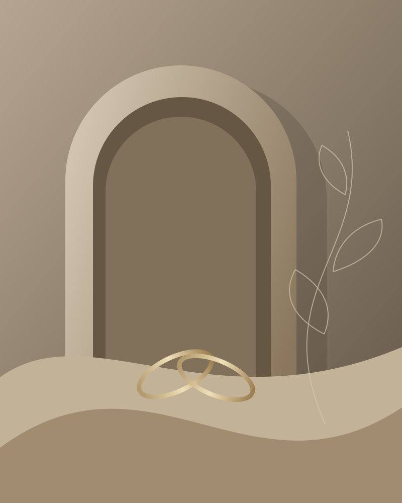
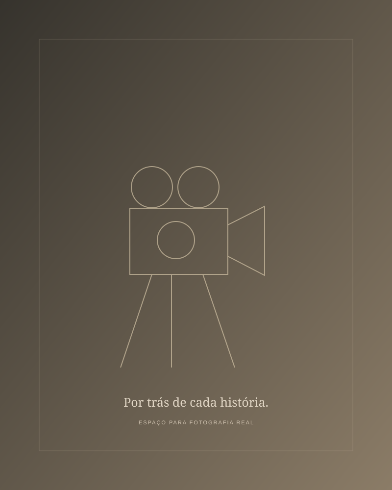

Casamentos
VIDEOMAKER • STORYMAKER • VITÓRIA/ES
Histórias que
merecem ser
revividas.
Transformamos momentos reais em filmes capazes de guardar sentimentos, detalhes e memórias para sempre.
01 / A essência Presença. Sensibilidade. Memória.

O que sentimos merece ficar
Capturando histórias,
frame a frame.
Cada história possui gestos, olhares e detalhes que não se repetem. A Lubase Frame registra esses momentos com sensibilidade, presença e uma narrativa cinematográfica feita para durar.
Filmes de casamento e experiências em tempo real.
Conheça nosso olhar02 / Portfólio Fragmentos que permanecem
Uma coleção de sentimentos
Histórias para
sentir de novo.
Um olhar atento ao que torna cada história única.
Projetos demonstrativos. Capas e filmes aguardam
o material real.
Casamentos
Casamento S | J
Casamentos
Casamento R | B
Casamentos
Casamento L | L
Casamentos
Casamento M | S
Pré-wedding
Antes do sim.
6 projetos demonstrativos
Para guardar. Para reviver.
Mais do que registrar,
queremos fazer você
sentir novamente.
Os pequenos gestos. As grandes emoções. Tudo o que faz o seu dia ser seu.
03 / O que fazemos Cada história, uma forma de contar
Seu momento.
Nosso olhar.
Da expectativa do primeiro encontro à emoção do grande dia.
Filmes de casamento
Registro completo dos momentos, detalhes e emoções do grande dia com linguagem cinematográfica.
↗Pré-wedding
Uma experiência audiovisual leve e personalizada para contar a história do casal antes do casamento.
↗Storymaker
Conteúdo produzido e publicado em tempo real, permitindo que cada momento seja compartilhado enquanto acontece.
↗Eventos
Cobertura profissional de celebrações, experiências, eventos sociais e ocasiões especiais.
↗Do primeiro encontro à última cena
Como transformamos
momentos em histórias
Conversa
Escutamos a sua história e entendemos o que você deseja guardar.
Planejamento
Alinhamos os detalhes, o roteiro e os momentos importantes do evento.
Captação
Registramos cada cena com presença, cuidado e naturalidade.
Entrega
Transformamos os registros em uma narrativa pronta para ser revivida.
04 / Por trás do olhar Histórias reais, memórias vivas
Sensibilidade em cada cena
Por trás da
Lubase Frame
A Lubase Frame nasceu do desejo de transformar momentos reais em memórias vivas. Nosso olhar busca muito mais do que belas imagens: queremos registrar a essência de cada história, com naturalidade, sensibilidade e intenção.
Cada projeto é acompanhado de perto, desde a primeira conversa até a entrega final.
Vamos nos conhecer
Palavras que ficam
Do outro lado da lente.
Espaço demonstrativo: os relatos abaixo são exemplos, não depoimentos reais.
Entre uma história e outra
Acompanhe
nossas histórias
Imagens ilustrativas · espaços para publicações
05 / O próximo capítulo Começa com uma conversa
Vamos criar uma memória?
Vamos contar
a sua história?
Conte um pouco sobre o seu evento e descubra como podemos transformar esse momento em um filme único.
Converse pelo WhatsApp ↗Vitória, Espírito Santo · Brasil